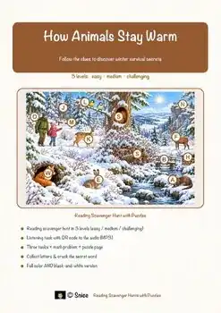
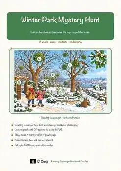
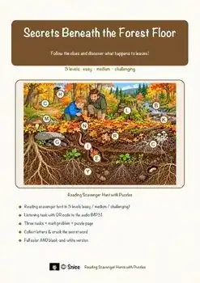
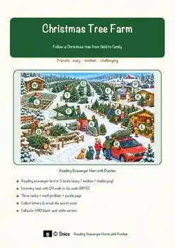
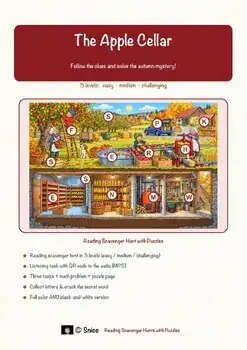
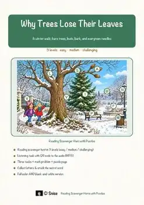
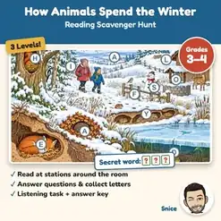
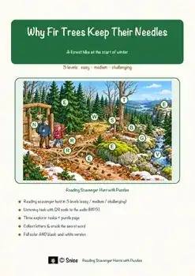
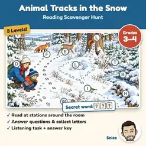
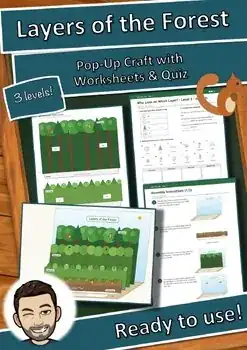

3rd Grade Animals & Nature Worksheets
13 Animals & Nature resources for 3rd Grade, ready to print: and more. Each resource page shows the grade range, page count and a preview and links straight to the product on TpT.
13 resources

Autumn Leaves Reading Comprehension | Science Scavenger Hunt 3-4

Animal Adaptations Reading Comprehension Passages | Science Scavenger Hunt 3-4

Winter Plants Reading Comprehension Passages | Science Scavenger Hunt 3-4

Grain Field Reading Comprehension Passages | Autumn Scavenger Hunt 3-4

Secrets Beneath Forest Floor Passages | Reading Scavenger Hunt 3-4

Autumn Forest Reading Comprehension Passages | Science Scavenger Hunt 3-4

Christmas Tree Reading Comprehension Passages | Winter Scavenger Hunt 3-4

Apple Cellar Reading Comprehension Passages | Autumn Scavenger Hunt 3-4

Fall & Winter Reading Comprehension Passages | Trees Science Scavenger Hunt

Animals in Winter Reading Scavenger Hunt | Hibernation Science Escape Activity

Why Fir Trees Keep Their Needles Reading Scavenger Hunt | Trees in Winter

Animal Tracks in the Snow Reading Scavenger Hunt | Winter Escape-Style Reading

Layers of the Forest Pop-Up Craft | Forest Habitat Science Activity Grades 3-4
No resources found – try a different search term or filter.